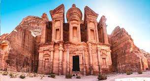
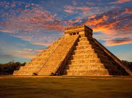

The Great Wall of China is a series of fortifications made of various materials, built to protect against invasions. It stretches over 13,000 miles.
Petra is an archaeological city in Jordan, famous for its rock-cut architecture and water conduit system. It is also known as the Rose City.
Christ the Redeemer is a giant statue of Jesus Christ located in Rio de Janeiro, Brazil. It stands 30 meters tall atop the Corcovado mountain.

Machu Picchu is a 15th-century Inca citadel located in the Andes mountains of Peru, known for its archaeological significance and stunning views.
Chichen Itza is a large pre-Columbian archaeological site in Mexico, known for its pyramid, El Castillo, which reflects the Maya civilization's astronomical knowledge.
The Colosseum is an ancient amphitheater located in the center of Rome, Italy. It was used for gladiatorial contests and public spectacles.

The Taj Mahal is a mausoleum in Agra, India, built by Mughal emperor Shah Jahan in memory of his wife Mumtaz Mahal, renowned for its stunning architecture.